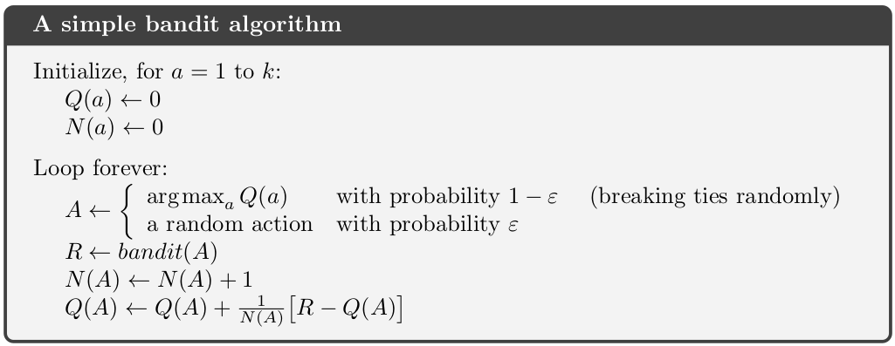

2. AB test and the regret¶
Let us suppose we developed two additional models that act in retrieving good products in our search engine. Let us call these models A and B and we also have our current model, C. Let us also suppose there is a metric of success for each time a user is exposed to a model, let us say a click. This is not the best reward signal we could use, but it is simple enough to our example.
How can we compare these models to use the best one?
The most common way is to make an AB test, only two models at the same time;
A multiple AB test, i.e., more than two models at the same time;
It does not matter which strategy we use. The models can be randomly exposed to user and after some time the decision is made in favor of one of them. Let us say we tested the models for a month and model A was victorious with the following numbers:
Model |
#sucess |
#failures |
exposure |
success fraction |
|---|---|---|---|---|
A |
65000 |
435000 |
500000 |
0.130 |
B |
50000 |
400000 |
450000 |
0.111 |
C |
45000 |
505000 |
550000 |
0.082 |
There is nothing wrong in doing this kind of experiment to choose the best model, but we can point out some “flaws”:
During this month one million users were exposed to other models rather the best one. If this population was exposed to model A we could have about 130000 successes rather than 95000. This difference (130000 - 95000 = 35000) is called regret.
The population exposed to models during this month can change its behavior in the future. This means that if we test the same models in the future, the result could be different.
If we could have a method to better decide which model expose to a user each time, i.e., not randomly, the regret could be minimized and the models could the tested for much longer periods or we could just let more than one in production all the time.
The so called Multi-Armed Bandits is a simple reinforcement learning strategy that has these benefeats.
2.1. Multi-Armed Bandits¶
The idea is simple:
At time \(t\) a user request arrives at the agent;
The agent decides which of the following models will be exposed to the user;
The model is exposed;
The results of the exposition are collected.
At time \(t+1\) another request arrives and the steps 1, 2, 3 and 4 are repeated.
{kind=link}
We may design the system not to making the decision in each request, but maybe every interval \(T\) (a minute, an hour, a day). If \(T\) is too big (depends on the problem) we are probably using the wrong solution, go to the simple AB test. The ideal case is a decision made in each request, but a decision proccess every 5 minutes may not hurt the performance.
The second step is the key to solve the problem and it is simple: the agent chooses the model based on the amount of successes and exposures it had previously, i.e., the agent acts choosing a model, so it needs a way to compute the a value for each action. Let us define some quantities:
\(R_{t}\) - Reward received at time \(t\);
\(A_{t}\) - Action at time \(t\);
\(k\) - Number of possible actions;
\(N(a)\) - The number of times action \(a\) was chosen previously to time \(t\);
\(Q_{t}(a)\) - Estimated value of action at time \(t\).
The number of models is the same of \(k\). For each action \(a \in \{a_{1}, a_{2}, ...,a_{k}\}\) we can compute its expected reward:
The agent then chooses the model which correspond to the action with highest value \(q\). This quantity can be computed in a more interesting way:
It makes sense since this is basically the same as parameter update to find it “real” value:
Often the quantity \(target - old\_estimate\) is called the estimate error. If the error goes to zero it means the estimation converged.
We also do not want the agent to always use the same model, it is important to let the agent explore other possibilities a little bit.
The basic algorithm from the Sutton, Barto book [SB18] is:
{kind=link}
import numpy as np
class Env:
def __init__(self,
action_probabilities,
success_reward,
failure_reward):
self.action_probabilities = action_probabilities
self.success_reward = success_reward
self.failure_reward = failure_reward
def step(self,action):
if np.random.random() < self.action_probabilities[action]:
return self.success_reward
else: return self.failure_reward
class Agent:
def __init__(self,action_space_size,exploration_factor):
self.action_space_size = action_space_size
self.eps = exploration_factor
self.Q = np.zeros(shape=(self.action_space_size))
self.N = np.zeros(shape=(self.action_space_size))
self.start_state = True
self.regret = {k:v for k,v in enumerate(range(self.action_space_size))}
def update_agent(self,action,reward):
self.N[action] += 1
self.Q[action] += (1/self.N[action])*(reward - self.Q[action])
if self.start_state:
if self.N.sum() >= 20:
self.start_state = False
def action(self,random_action=False):
if random_action:
return self.random_action()
elif self.start_state:
return self.random_action()
elif np.random.random() < self.eps:
return self.random_action()
else:
return np.argmax(self.Q)
def random_action(self):
return np.random.choice(range(self.action_space_size))
def compute_regret(self):
best_action = np.argmax(self.Q)
models_regret = (self.Q[best_action] *self.N) - (self.Q *self.N)
for k,v in enumerate(models_regret):
self.regret[k] = v
def simulate(agent,env,epochs,random_action=False):
for i in range(epochs):
action = agent.action(random_action)
reward = env.step(action)
agent.update_agent(action,reward)
agent.compute_regret()
return agent
2.2. Testing different agents¶
#params
true_models_probs = [0.55,0.545,0.53]
actition_state_size = 3
epochs = 50000
# instantiate environment
env = Env(true_models_probs,1,0)
# agents
models_names = ["model_A","model_B","model_C"]
# random agent or AB test
random_agent = Agent(actition_state_size,0.0)
# greedy agent
greedy_agent = Agent(actition_state_size,0.0)
# ner greedy agent
near_greedy_agent = Agent(actition_state_size,0.1)
# train agents
random_agent = simulate(random_agent,env,epochs,True)
greedy_agent = simulate(greedy_agent,env,epochs)
near_greedy_agent = simulate(near_greedy_agent,env,epochs)
2.2.1. Checking success rate estimates¶
for i,j in zip(models_names,random_agent.Q):
print(f"{i}: {j:.4f}")
>>> model_A: 0.5552
>>> model_B: 0.5464
>>> model_C: 0.5307
for i,j in zip(models_names,greedy_agent.Q):
print(f"{i}: {j:.4f}")
>>> model_A: 0.4286
>>> model_B: 0.5449
>>> model_C: 0.4286
for i,j in zip(models_names,near_greedy_agent.Q):
print(f"{i}: {j:.4f}")
>>> model_A: 0.5498
>>> model_B: 0.5445
>>> model_C: 0.5308
2.2.2. Exposure¶
for i,j in zip(models_names,random_agent.N):
print(f"{i}: {int(j)}")
>>> model_A: 16627
>>> model_B: 16764
>>> model_C: 16609
for i,j in zip(models_names,greedy_agent.N):
print(f"{i}: {int(j)}")
>>> model_A: 7
>>> model_B: 49986
>>> model_C: 7
for i,j in zip(models_names,near_greedy_agent.N):
print(f"{i}: {int(j)}")
>>> model_A: 43995
>>> model_B: 2158
>>> model_C: 3847
2.2.3. Regret¶
random_agent.regret
{0: 0.0, 1: 147.05984242491286, 2: 407.0067360317007}
1
greedy_agent.regret
{0: 0.8143880286480285, 1: 0.0, 2: 0.8143880286480285}
1
near_greedy_agent.regret
{0: 0.0, 1: 11.544380043177398, 2: 73.21604727809085}